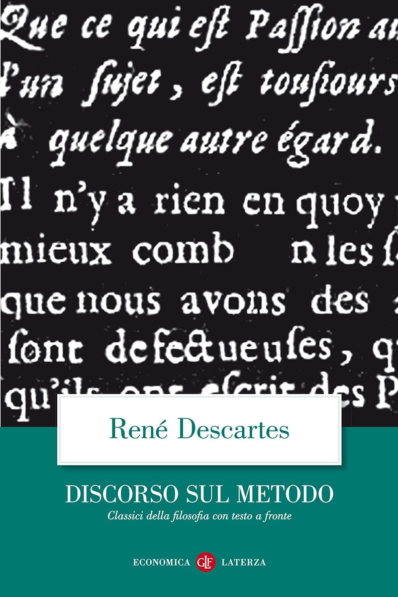

24:12 · 5 OPERE
Ways to understand consciousness. The self and the reality of perception
Il filo del discorso
La conferenza, tenuta in inglese, esamina la coscienza attraverso il rapporto fra pensiero, percezione e identità personale. Dr Divago parte dal dubbio cartesiano e dal cogito, mettendo in discussione la riduzione dell’essere umano a una sola facoltà o funzione. Il confronto con Euclide mostra come una negazione possa diventare strumento di un ragionamento; Locke, Leibniz e Berkeley introducono poi il problema dell’origine delle idee e del ruolo attivo dell’intelletto. Gli esempi del bastone immerso nell’acqua e dell’apparenza del terreno conducono alla caverna platonica e alla distinzione fra ciò che appare e ciò che si cerca di conoscere. La seconda parte contesta le spiegazioni che il relatore considera meccanicistiche della mente e propone una distinzione fra coscienza e consapevolezza, richiamando Freud e l’esperienza del sonno. Il cervello in una vasca e il film Matrix diventano esperimenti immaginativi sui limiti della percezione. La conclusione torna al sogno, al mito e a Calderón, lasciando aperta una discussione sul rapporto fra il soggetto e la realtà di cui fa esperienza. Le interpretazioni storiche e le obiezioni alle neuroscienze restano tesi del relatore.
I libri nel discorso

Discorso sul metodo
Copertina: Laterza · Economica 127 · opera in collana dal 1998, ristampa 2025 · traduzione di Maria Garin
Immagine autentica dell’opera, controllata visivamente; l’edizione di riferimento non è attribuita al filmato.
Cartesio, il 1637 e il titolo sul metodo sono annunciati; il titolo originale riscontrato è Discours de la méthode.
Passaggio 0:18 ↗ · Fonti e libro ↗
L’uomo a una dimensione
Copertina: Einaudi, Piccola Biblioteca Einaudi, 1999
Copertina di un’edizione bibliografica dell’opera, con introduzione di Luciano Gallino. La citazione nel video resta probabile; questa edizione non vi è confermata.
Herbert Marcuse e One-Dimensional Man sono annunciati con piccole deformazioni ASR.
Passaggio 2:52 ↗ · Fonti e libro ↗
Gli elementi
Copertina: Bompiani · Tutte le opere, raccolta contenente Gli elementi
La copertina illustra la raccolta Tutte le opere, che include Gli elementi; non è attribuita al video.
Euclide e gli Elementi sono annunciati a proposito dell’infinità dei numeri primi.
Passaggio 5:34 ↗ · Fonti e libro ↗
La Repubblica
Copertina: Laterza · La Repubblica · edizione con testo a fronte di riferimento
Immagine associata all’ISBN di riferimento e controllata visivamente; edizione e traduzione non identificate come quelle citate o lette nel video.
Il mito della caverna richiama la Repubblica, già nominata in un precedente passaggio della conferenza.
Passaggio 14:37 ↗ · Fonti e libro ↗
La vita è sogno (La vida es sueño)
Copertina del volume con il dramma e l’auto sacramental: Adelphi · Piccola Biblioteca 252 · 1990 · a cura di Luisa Orioli
Copertina autentica del volume Adelphi che comprende il dramma La vita è sogno e l’auto sacramental omonimo. La voce riguarda il dramma; il richiamo del relatore non identifica questa edizione italiana.
Calderón de la Barca e La vida es sueño sono annunciati.
Passaggio 23:02 ↗ · Fonti e libro ↗Minutaggi ricavati da testi automatici, da riascoltare. Le identificazioni probabili sono segnalate accanto ai libri.